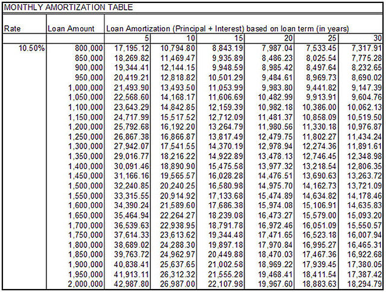
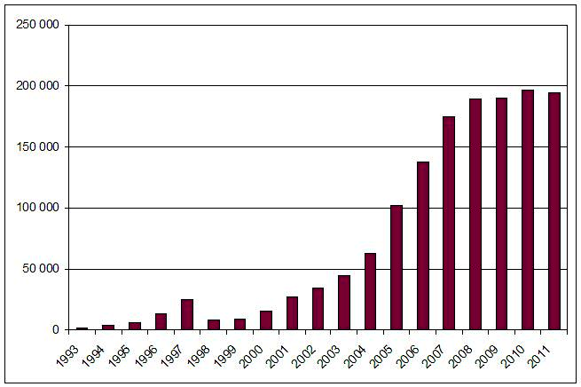

Types of investments include: 20% to 50% (as an asset), greater than 50% (as a subsidiary), and less than 20% (as an investment position).
Distinguish between a 20% to 50%, greater than 50% and less than 20% investment
A share is a single unit of ownership in a corporation, mutual fund, or any other organization. A joint stock company divides its capital into issuing shares, which are offered for sale to raise capital. A share is thus an indivisible unit of capital, expressing the proprietary relationship between the company and the shareholder. The denominated value of a share is its face value, as calculated by dividing the total capital of a company by the total number of shares.
Shares are valued according to various principles in different markets, but a basic premise is that a share is worth the price at which a transaction would be likely to occur were the shares to be sold. The liquidity of markets is a major consideration as to whether a share is able to be sold at any given time. An actual sale transaction of shares between buyer and seller is usually considered to provide the best prima facie market indicator as to the "true value" of shares at that particular time.
Equity method in accounting is the process of treating equity investments, usually 20% to 50%, in associate companies. The investor keeps such equities as an asset. The investor's proportional share of the associate company's net income increases the investment (and a net loss decreases the investment), and proportional payment of dividends decreases it. In the investor's income statement, the proportional share of the investee's net income or net loss is reported as a single-line item.
The ownership of more than 50% of voting stock creates a subsidiary. Its financial statements consolidate into the parent's financial statements.
A subsidiary company, subsidiary, or daughter company is a company that is completely or partly owned and partly or wholly controlled by another company that owns more than half of the subsidiary's stock. The subsidiary can be a company, corporation, or limited liability company. In some cases, it is a government or state-owned enterprise. The controlling entity is called its parent company, parent, or holding company.
An operating subsidiary is a business term frequently used within the United States railroad industry. In the case of a railroad, it refers to a company that is a subsidiary but operates with its own identity, locomotives, and rolling stock. In contrast, a non-operating subsidiary would exist on paper only (i.e. stocks, bonds, articles of incorporation) and would use the identity and rolling stock of the parent company.
The ownership of less than 20% creates an investment position carried at historic book or fair market value (if available for sale or held for trading) in the investor's balance sheet .
Due to different durations of holding and other factors, companies use several accounting methodologies, including amortized cost, fair value, and equity.
Explain the difference between amortized cost, fair value and the equity method for reporting debt securities
If a business holds debt securities to maturity with the intent to sell are classified as held-to-maturity securities. Held to maturity securities are reported at amortized cost less impairment.
Fair value, defined as a rational and unbiased estimate of the potential market price of a good, service, or asset.
Fair value, also called fair price, is a concept used in accounting and economics, defined as a rational and unbiased estimate of the potential market price of goods, services, or assets, taking into account such objective factors as:
Debt and equity securities that are bought and held principally for the purpose of selling them in the near term are classified as trading securities. These securities are reported at fair value, with unrealized gains and losses included in earnings.
Debt and equity securities not classified as either held-to-maturity securities or trading securities are classified as available-for-sale securities. These securities are reported at fair value, with unrealized gains and losses excluded from earnings and reported in a separate component of shareholders' equity (Other Comprehensive Income).
Equity method in accounting is the process of treating equity investments, usually 20–50%, in associate companies. The investor keeps such equities as an asset. The investor's proportional share of the associate company's net income increases the investment (a net loss decreases the investment), and proportional payment of dividends decreases it. In the investor's income statement, the proportional share of the investee's net income or net loss is reported as a single-line item.The ownership of more than 50% of voting stock creates a subsidiary. Its financial statements consolidate into the parent's.
The ownership of less than 20% creates an investment position carried at historic book or fair market value (if available for sale or held for trading) in the investor's balance sheet.
Debt held to maturity is shown on the balance sheet at the amortized acquisition cost.
Explain how a company would apply the amortized cost method to a debt held to maturity
The definition of a debt is held-to-maturity is a debt which the company has both the ability and intent to hold until maturity. Debt held to maturity is classified as a long-term investment and it is recorded at the market value (original cost) on the date of acquisition. All changes in market value are ignored for debt held to maturity.
Debt held to maturity is shown on the balance sheet at the amortized acquisition cost. To find the amortized acquisition cost the securities are amortized like a mortgage or a bond.
Debt held to maturity is shown on the balance sheet at the amortized acquisition cost. To find the amortized acquisition cost the securities are amortized like a mortgage or a bond.
Example:
Z company purchases 40,000 of the 8%, 5-year bonds of Tee Company for \$43,412. The bonds provide a 6% return, with interested paid semiannually. Z Company has both the ability and intent to hold the securities until the maturity date.
The journal entry to record the purchase:
Investment in bonds debit --------- 40,000
Premium on bonds debit ------------ 3,412
Cash credit ------------------------------43,412
The accounting records show the debt at the amortized cost (face amount plus premium/less discount) and the difference between the maturity value and the cost of the bonds is amortized to the income statement over the life of the bonds.
In order to record the interim interest revenue and report the investment on the balance sheet, it is necessary to prepare an amortization schedule for the debt.
The first interest payment is \$1,600, but since the company paid a premium, the effective interest earned is \$1,302 (net the amortization of the premium).
Example:
The Journal Entry:
Cash debit ---------------------\$1,600
Premium on bonds credit ----\$298
Interest revenue credit ------- 1,302
The Z Company's investment in Tee company is shown on the balance sheet as follows:
Held-to-Maturity Investments
Corporate bonds ------------------ \$40,000
Plus: unamortized premium ----- 2,166
Book value (amortized cost)---- \$42,166
At maturity, firms should debit cash and credit held to maturity investments the balance of the principal payment.
Summarize the journal entry required to record a debt held to maturity
Interest is a fee paid by a borrower of assets to the owner as a form of compensation for the use of the assets. It is most commonly the price paid for the use of borrowed money, or money earned by deposited funds.
When money is borrowed, interest is typically paid to the lender as a percentage of the principal, the amount owed to the lender. The percentage of the principal that is paid as a fee over a certain period of time (typically one month or year) is called the interest rate.
Nominal, principal, par, or face amount —is the amount on which the issuer pays interest, and which, most commonly, has to be repaid at the end of the term. Some structured bonds can have a redemption amount which is different from the face amount and can be linked to performance of particular assets such as a stock or commodity index, foreign exchange rate, or a fund. This can result in an investor receiving less or more than his original investment at maturity.
Some structured bonds can have a redemption amount which is different from the face amount and can be linked to performance of particular assets such as a stock or commodity index, foreign exchange rate, or a fund. This can result in an investor receiving less or more than his original investment at maturity
The issuer has to repay the nominal amount on the maturity date (which can be any length of time). As long as all due payments have been made, the issuer has no further obligations to the bond holders after the maturity date. The maturity can be any length of time, although debt securities with a term of less than one year are generally
During the life of the debt held to maturity, the company holding the debt will record the interest received at the designated payment dates.
Journal entry
Debit cash
Credit interest revenue
If a company paid \$10,000 for 8% bonds, a journal entry is required to record the payment of principal at maturity.
Journal entry
Debit cash \$10,000
Credit held to maturity investments \$10,000
Remember the original entry debited the held to maturity investment account and credit cash.
How debt sales are recorded depends on whether the debt is classified as "held-to-maturity," "a trading security," or "available-for-sale".
Summarize how to record the sale of a held-to-maturity, trading security and available for sale debt
Under FASB 115, a part of US GAAP (Generally Accepted Accounting Principles), a company must classify all of the debt securities it owns into one of three categories. If the company intends to hold the debt until it matures, it must be classified as a "held-to-maturity" security. If the company acquires the debt with the intent to resell it in the short-term, then it must be listed as a "trading security. " If the debt is acquired without the intent to resell it in the short-term, nor the intent to hold it to maturity, it should be classified as "available-for-sale" . Each of these three classifications is treated differently for accounting purposes, both prior to sale and during the sale.
When debt is acquired and is intended to be held until maturity, it is recorded first by debiting a "Debt Investment Account," and then by crediting "Cash" for the amount the debt was purchased. For example, if a company purchased \$1000 in debt securities, the transaction would be recorded like this:
Investments - Corporate Debt : \$1000
Cash : \$1000.
While the market value of the debt may vary over time, the company does not need to adjust the value of the debt on its books. Once the company sells the bond, it must report any gains or losses on the sale of the debt. So, in the example above, if the company sold the debt for \$1200, it would need to make the following journal entry.
Investments : \$1000
Net Gain on Sale : \$200
Cash : \$1200
If the company sold the debt for \$800, it would need to make the following journal entry:
Investments : \$1000
Cash : \$800
Net Loss on Sale : \$200
If a company acquires debt that it intends to sell in the short-term, it must still record the sale. If a company acquired debt for \$1000, and this debt is classified as a trading security, the company would still need to make the first journal entry in the aforementioned manner.That being said, the value of the debt on the owner's books must be adjusted to match the market value of the debt. For example, if the market value of the debt declined \$200 from its original value to \$800, a company would need to make the following journal entry:
Unrealized loss on trading security : \$200
Investments : \$200
The unrealized loss would be included on the company's income statement for the period it was recorded. If immediately after the accounting period, the company sold the debt for \$800, it would need to make the following journal entry:
Cash : \$800
Investments : \$800
Because both the loss and the decrease in the debt asset's value were already recorded in the prior accounting period, the company would not have to make any additional adjustments.
If a company acquires debt that is available-for-sale, it would still need to make a first journal entry in the same way that it would if the debt was "held-to-maturity" or a "trading security. " It would also need to adjust the value of its debt asset in relation to its current market value. Using the same example above, assume a debt asset was acquired for \$1000 but declined in value by \$200. In the case of an available-for-sale asset, the following journal entry should be made in the following accounts:
(Equity) Unrealized loss on security investment : \$200
(Asset) Investments : \$200
Unlike trading securities, the unrealized gain is recorded in the equity section of the balance sheet and does not effect the current year income statement at all. This is because, unlike trading securities, the loss from an available-for-sale security is not expected to be realized in the near future. Returning to the example, assume that the debt asset is sold immediately after the end of the accounting period where it first recognized the unrealized loss. The asset is sold for \$800. In such a case, the following entries would be appropriate:
(Asset) Cash : \$800
(Income Statement) Loss on Investment : \$200
(Asset) Investments : \$800
(Equity) Unrealized loss on security investment : \$200
The result of the journal entry is that the unrealized loss is realized, so the company's profit for the period is decreased by \$200. The debt asset, as well as the unrealized loss, is removed from the company's books.
How the stock sale is accounted for depends on the type of stock sold.
Summarize how to account for the sale of common stock, preferred stock and treasury stock
Often times companies offer their stock for sale as a way to generate cash. How the stock sale is accounted for depends on the type of stock sold. Most stock sales involve common stock or preferred stock.
Often times companies offer their stock for sale as a way to generate cash. How the stock sale is accounted for depends on the type of stock sold. Most stock sales involve common stock or preferred stock.
Journal entry
Debit cash
Credit common stock
If the common stock is sold above par value the journal entry is slightly different.
Debit cash
Credit common stock
Credit additonal paid in capital (to account for the difference between par value and sell value)
The sale of preferred stock is similarly treated, but a separate accounts should be established to record preferred stock and any additional paid in capital for preferred stock sold at above par value.
Journal entry
Debit cash
Credit preferred stock
Credit additional paid in capital preferred stock (if needed)
Treasury stock is issued stock that the company has bought back from its shareholders. Since a corporation can't be its own shareholder, the "bought back" stocks are not considered assets of the corporation. Treasury stock also doesn't have the right to vote, receive dividends or receive liquidation value.
If the company plans to re issue the shares in the future, it would hold them in treasury and report the reduction in stockholder's equity on the balance sheet.
There are several reasons a company may purchase treasury stock, it may need it for employee compensation plans, to buy another company or to reduce the number of outstanding shares.
Journal entry
Debit treasury stock
Credit cash
When treasury stock is sold the accounts used to record the transaction will vary depending on whether the stock sold above or below the cost of purchase.
Sold above purchase cost
Debt cash
Credit treasury stock
Credit additional paid in capital (the difference between sale price and purchase price)
Companies must calculate the fair market value for these available for sale securities at the end of each subsequent accounting period.
Explain why a company calculates the fair market value of available for sale securities
Often companies use excess cash to purchase stocks and bonds from other companies. If a company purchases stocks or bonds with the intent to sell these items at a future date when they need cash, these are referred to as "Available-for-sale securities".
A company initially records the "available for sale securities" at cost. While holding onto the securities the company must calculate the fair market value for these securities at the end of each subsequent accounting period.
The difference between the purchase price and the current fair market value results in an unrealized gain or loss. The unrealized gain or loss affects the company's accumulated other comprehensive income, a component of stockholders' equity.
Realized gains and losses are included in income; unrealized amounts are included in income (trading investments) or in other comprehensive income (available-for-sale investments).
Unrealized holding gains (unrealized because asset is not sold yet)-increase in fair value of an asset while held.
Realized holding gain (realized through sale) increase in fair value of an asset while held.
Using the fair value method, available for sale investment with unrealized gains and losses included in other comprehensive income should have:
Using the fair value method, available for sale investment with unrealized gains and losses recognized in net income should have:
The ownership of less than 20% creates an investment position carried at fair market value in the investor's balance sheet.
Explain how the Fair Value Method is used to calculate the value of holding of less than 20%
The ownership of less than 20% creates an investment position carried at historic book value or fair value (if available for sale or held for trading) in the investor's balance sheet.
In accounting, fair value (also knows as "fair market value") is used as a certainty of the market value of an asset (or liability) for which a market price cannot be determined (usually because there is no established market for the asset). Under US GAAP (FAS 157), fair value is the amount at which the asset could be bought or sold in a current transaction between willing parties, or transferred to an equivalent party, other than in a liquidation sale. This is used for assets whose carrying value is based on mark-to-market valuations; for assets carried at historical cost, the fair value of the asset is not used.
Since market transactions are often not observable for assets such as privately held businesses and most personal and real property, fair value must be estimated. An estimate of fair value is usually subjective due to the circumstances of place, time, the existence of comparable precedents, and the evaluation principles of each involved person. Opinions on value are always based upon subjective interpretation of available information at the time of assessment. This is in contrast to an imposed value, in which a legal authority (law, tax regulation, court, etc.) sets an absolute value upon a product or a service.
A property sale, in lieu of an eminent domain taking, would not be considered a fair market transaction since one of the parties (i.e., the seller) was under undue pressure to enter into the transaction. Other examples of sales that would not meet the test of fair market value include a liquidation sale, deed in lieu of foreclosure, distressed sale, and similar types of transactions.
In United States tax law, the definition of fair value is found in the United States Supreme Court decision in the Cartwright case: the fair market value is the price at which the property would change hands between a willing buyer and a willing seller, neither being under any compulsion to buy or to sell and both having reasonable knowledge of relevant facts.
The term fair market value is used throughout the Internal Revenue Code among other federal statutory laws in the USA including bankruptcy, many state laws, and several regulatory bodies.
Calculating fair value involves considering objective factors including acquisition, supply vs. demand, actual utility, and perceived value.
Summarize how to calculate fair value for holdings of less than 20%
Fair value, is a concept used in accounting and economics, defined as a rational and unbiased estimate of the potential market price of a good, service, or asset, taking into account such objective factors as:
In accounting, fair value is used as an approximation of the market value of an asset (or liability) for which a market price cannot be determined (usually because there is no established market for the asset). When an active market does not exist other methods have to be used to estimate the fair value. Assumptions used to estimate fair value should be from the perspective of an unrelated market participant. This necessitates identification of the market in which the asset or liability trades. If more than one market is available, the "most advantageous market" should be used. Both the price and costs to do the transaction must be considered in determining which market is the most advantageous market.
A three-level framework is used to determine an asset or liability's fair value:
Under US GAAP (FAS 157), fair value is the amount at which the asset could be bought or sold in a current transaction between willing parties or transferred to an equivalent party other than in a liquidation sale. This is used for assets whose carrying value is based on mark-to-market valuations; for assets carried at historical cost, the fair value of the asset is not used.
An example of how to determine fair value can involve the purchase of company shares of less than 20% total equity -- assume ABC Corporation purchases 10% of XYZ's Corporation's common stock, or 50,000 shares. The market price of the stock is USD 1. When purchasing less than 20% of a company's stock, the cost method is used to account for the investment. ABC records a journal entry for the purchase by debiting Investment in XYZ Corp. for USD 50,000 and crediting Cash for USD 50,000.
As required by FAS 115, investments accounted for under the cost method should be adjusted to current fair value at the end of each accounting period, in cases where the fair value is readily determinable. Adjustments are debited (for gains in fair value) or credited (for losses) to a fair value adjustment account that will adjust the investment account balance to its fair value at the end of the reporting period.
If the investment is considered a "trading security" or stock purchased for the purpose of selling it in the near term, the balancing debit or credit is charged to an unrealized loss or gain account. If the investment is an "available for sale" security, the balancing debit or credit also goes to an unrealized loss or gain account. For investments where the fair value is not readily determinable, the investment is carried at cost.
Stock investments of 20% or less are recorded at cost (considered its fair value) and reported as an asset on the balance sheet.
Explain how to record stock investments of less than 20% using Fair Value
Fair value accounting, also known as mark-to-market accounting, can change values on the balance sheet as market conditions change. In contrast, historical cost accounting, based on past transactions, is simpler, more stable, and easier to perform, but does not represent current market value. It summarizes past transactions instead. Mark-to-market accounting can become inaccurate if market prices fluctuate greatly or change unpredictably. Buyers and sellers may claim a number of specific instances when this is the case, including inability to value the future income and expenses on the income statement accurately and collectively, often due to unreliable information, or overly-optimistic/ overly-pessimistic expectations.
Ownership of less than 20% of a company's stock dictates that the investor is not able to exercise significant influence in the company or participate in shareholder meetings where business decisions affecting the company are made. Ownership of this quantity of stock is recorded using the cost method.
The following is an example of how to report investments of less than 20% of shares -- assume ABC Corporation purchases 10% of XYZ's Corporation's common stock, or 50,000 shares. The market price of the stock is USD 1. When purchasing less than 20% of a company's stock, the cost method is used to account for the investment. ABC records a journal entry for the purchase by debiting Investment in XYZ Corp. for USD 50,000 and crediting Cash for USD 50,000. The investment in XYZ Corporation is reported at cost in the asset section of the balance sheet.
If the investee declares dividends, the investor records a journal entry for their share of the investment. Assume XYZ Corporation declares a dividend of USD 1 per share. ABC records a journal entry debiting Dividends Receivable for USD 50,000 and crediting Dividend Income for USD 50,000. The Dividend Receivable is reported on the balance sheet under current assets and Dividend Income is reported on the income statement under a section for other income.
As required by FAS 115, the value of an investment accounted for under the cost method should be adjusted to current fair value at the end of each accounting period, in cases where the fair value is readily determinable. Changes in fair value are debited (for gains in fair value) or credited (for losses) to a fair value adjustment account reported on the balance sheet to adjust the investment account balance to its end of period fair value.
If the investment is considered a "trading security" or stock purchased for the purpose of selling it in the near term, the balancing debit or credit is charged to an unrealized loss or gain reported on the income statement. If the investment is an "available for sale" security, the balancing debit or credit goes to an unrealized loss or gain account reported in the other comprehensive income section of owner's equity on the balance sheet. When the investment is sold, all losses or gains from the transaction become realized and flow through into the income statement to adjust revenues for the period.
Equity method is the process of treating equity investments (usually 20–50%) of companies. The investor keeps such equities as an asset.
Summarize how a company uses the Equity Method to record their investment in another company
Equity method in accounting is the process of treating equity investments, usually 20–50%, in associate companies. The investor keeps such equities as an asset. The investor's proportional share of the associate company's net income increases the investment; a net loss, or proportional payment of dividends, decreases the investment. In the investor's income statement, the proportional share of the investee's net income or net loss is reported as a single-line item .
Investors keep equities as assets using equity method.
An equity investment generally refers to the buying and holding of shares of stock by individuals and firms in anticipation of income from dividends and capital gains. Typically, equity holders receive voting rights, meaning that they can vote on candidates for the board of directors (shown on a proxy statement received by the investor) as well as certain major transactions. Equity holders also receive residual rights, meaning that they share the company's profits, as well as the right to recover some of the company's assets in the event that it folds—although they generally have the lowest priority in recovering their investment. It may also refer to the acquisition of equity (ownership) participation in a private (unlisted) company or a startup company. When the investment is in infant companies, it is referred to as venture capital investing and is generally regarded as a higher risk than investment in listed going-concern situations.
Equities held by private individuals are often held as mutual funds or as other forms of collective investment schemes, many of which have quoted prices that are listed in financial newspapers or magazines. Mutual funds are typically managed by prominent fund management firms, such as Schroders, Fidelity Investments, or The Vanguard Group. Such holdings allow individual investors to obtain diversification of the fund(s) and to make use of the skill of the professional fund managers in charge of the fund(s). An alternative, which is usually employed by large private investors and pension funds, is to hold shares directly. In the institutional environment, many clients who own portfolios have what are called segregated funds, as opposed to or in addition to the pooled mutual fund alternatives.
A calculation can be made to assess whether an equity is over- or under-priced, compared with a long-term government bond. This is called the Yield Gap or Yield Ratio. It is the ratio of the dividend yield of an equity and that of the long-term bond.
20-50% of overall shares in a firm is referred to as a minority interest, which is a non-controlling position from a strategic frame.
Understand the role minority interest shareholders hold in decision-making, and the accounting method used to report it
Holding shares in an organization grants a certain level of voting rights and ownership of that organization. This becomes particularly relevant when ownership of the firm reaches or exceeds 20% of the overall value of the organization. Over 50% ownership indicates an actual transfer of ownership, often recorded as a subsidiary by the owning party.
The space between 20% and 50% has specific guidelines in regards to reporting, ownership, and the assessment of control. This is referred to as an associate company, and must be reported utilizing the equity method.
This is the method used to record an investment at the level of an associate company (20-50% ownership). This is considered an asset on behalf of the investor, and reported accordingly. An investment's percentage ownership of the company appreciates when the net income increases and depreciates when it decreases. This share is reported on the investor's income statement as a single-line item.
Control of an organization is in the hands of the owners. The owners, in most publicly traded situations, are represented by the individual who hold significant percentages of the overall organization's value. In a situation where an individual or organization owns more than 20% and less than 50% of the overall shares, this control is referred to as a minority interest.
Owning 50% or more of the shares is a majority interest, granting the owner volume control over significant organizational decisions. However, a minority interest is still a primary shareholder that will (in most situations) have influence on the decisions being made at the strategic level.
Generally speaking, minority interest is still non-controlling interest. 51% is required to make substantial decisions regarding the organization itself. That being said, a minority interest is still a significant share of the organization. As a result, it is not uncommon for minority interest shareholders to hold a seat on the board of directors, or to be consulted regarding the decisions.
Investments recorded under the equity method usually consist of stock ownership of a company between 20% to 50%.
Explain why a company would use the Equity Method to determine how to report their 20-50% investment
When the amount of stock purchased is between 20% and 50% of the common stock outstanding, the purchasing company's influence over the acquired company is often significant. The deciding factor, however, is significant influence or the ability for the investor to have a say in business decisions made by company owners. If other factors exist that reduce the influence, or if significant influence is gained at an ownership of less than 20%, the equity method may be appropriate. FASB interpretation 35 (FIN 35) underlines the circumstances where the investor is unable to exercise significant influence).
To account for this type of investment, the purchasing company uses the equity method. Under the equity method, the purchaser records its investment at the original cost. The balance of the investment increases by the pro-rata share of the investee's income and decreases by the pro-rata share of dividends declared by the subsidiary.
An example of how to apply the equity method to a stock investment -- assume ABC Corporation purchases 30% of XYZ Corporation (or 80,000 shares) and can exercise significant influence. The market price of the stock is USD 1. At the end of 201X, XYZ earns net income of 100,000 and declares a dividend of USD 1 per share. The following journal entries are made by ABC to record the investment in XYZ:
Journal entry for the stock investment purchase:
Journal entry to account for the pro-rata share of XYZ annual income:
Journal entry to account for the pro-rata share of XYZ dividends:
At the time of purchase, goodwill can arise from the difference between the cost of the investment and the book value of the underlying assets. The component that can give rise to goodwill is: the difference between the fair market value of the underlying assets and their book value. Goodwill is an accounting concept meaning the excess value of an asset acquired over its book value due to a company's competitive advantages.
Goodwill is no longer amortized under U.S. GAAP (FAS 142) of June 2001. Companies objected to the removal of the option to use pooling-of-interests, so amortization was removed by the Financial Accounting Standards Board as a concession. As of January 1, 2005, it is also forbidden under International Financial Reporting Standards. Goodwill can now only be impaired under these GAAP standards.
To test goodwill for impairment, companies are now required to determine the fair value of the reporting units, using the present value of future cash flow, and compare it to their carrying value (book value of assets plus goodwill minus liabilities). If the fair value is less than carrying value (impaired), the goodwill value needs to be reduced so that the fair value is equal to the carrying value. The impairment loss is reported as a separate line item on the income statement, and the new adjusted value of goodwill is reported in the balance sheet.
When the amount of stock owned is >50% of common stock, a parent-subsidiary relationship is formed that requires consolidated reporting.
Explain how to report for a combined entity
The ownership of more than 50% of voting stock creates a subsidiary. The financial statements of the parent and subsidiary are consolidated for reporting purposes.
A subsidiary company, or daughter company is a company that is completely or partly owned and partly or wholly controlled by another company that owns more than half of the subsidiary's stock. The subsidiary can be a company, corporation, or limited liability company. In some cases it is a government or state-owned enterprise. The controlling entity is called its parent company, parent, or holding company.
An operating subsidiary is a business term frequently used within the United States's railroad industry. In the case of a railroad, it refers to a company that is a subsidiary but operates with its own identity, locomotives, and rolling stock. In contrast, a non-operating subsidiary would exist on paper only (i.e. stocks, bonds, articles of incorporation) and would use the identity and rolling stock of the parent company.
When the amount of stock purchased is more than 50% of the outstanding common stock, the purchasing company usually has control over the acquired company. Control in this context is defined as ability to direct policies and management. In this type of relationship the controlling company is the parent and the controlled company is the subsidiary. The parent company needs to issue consolidated financial statements at the end of the year to reflect this relationship.
Consolidated financial statements show the parent and the subsidiary as one single entity. During the year, the parent company can use the equity or the cost method to account for its investment in the subsidiary. Each company keeps separate books. However, at the end of the year, a consolidation working paper is prepared to combine the separate balances and to eliminate the intercompany transactions between the parent and the subsidiary, along with the subsidiary's stockholder equity and the parent's subsidiary investment account. The result is one set of financial statements that reflect the financial results of the consolidated entity. As of 2004, the acquisition method is the only allowable method that can be used to prepare consolidated financial statements for companies that combined after 2004. Other consolidation methods previously used were the purchase and the pooling of interests methods .
The following is an example of how to calculate consolidated net income -- assume ABC Corporation owns 80% of XYZ Corporation; the remaining 20% is a non-controlling ownership interest.
Net Income for 201X for ABC is USD 20,000 and for XYZ net income is USD 8,000. First, to arrive at consolidated net income for the two companies, ABC must eliminate the effect of the equity method used to account for its investment.
ABC's net income for the year includes 80% of XYZ's net income, or USD 6,400. This amount must be subtracted from the net income figure to arrive at 13,600 (20,000 - 6,400).
The consolidated net income for both companies after this adjustment is USD 21,600 (20,000 - 6,400 + XYZ's total net income of 8,000). Second, the portion of net income attributed to the non-controlling ownership interest must be deducted, or USD 1,600 (8,000 * .20).
Therefore, consolidated income for ABC and its controlling interest in XYZ is USD 20,000 (21,600 - 1,600).
{kind=link}
{kind=link}